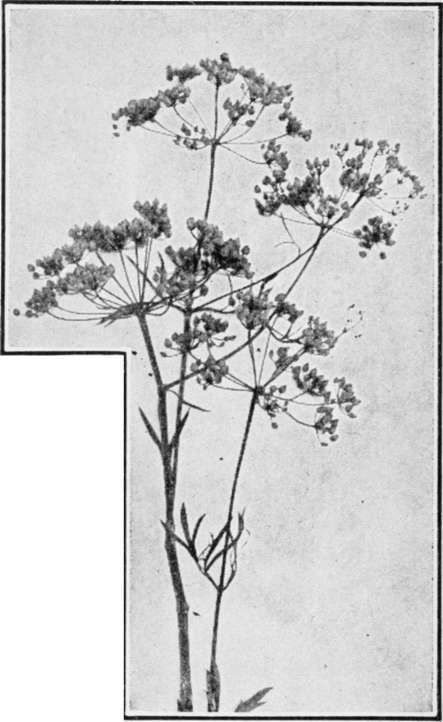

Fennel
Description
This section is from the book "Culinary Herbs", by M. G. Kains. Also available from Amazon: Culinary Herbs, Their Cultivation, Harvesting, Curing and Uses.
Fennel
Fennel (Foeniculum officinale, All.), a biennial or perennial herb, generally considered a native of southern Europe, though common on all Mediterranean shores. The old Latin name Foeniculum is derived from foenum or hay. It has spread with civilization, especially where Italians have colonized, and may be found growing wild in many parts of the world, upon dry soils near the sea coast and upon river banks.
It seems to be partial to limestone soils, such as the chalky lands of England and the shelly formation of Bermuda. In this latter community I have seen it thriving upon cliffs where there seemed to be only a pinch of soil, and where the rock was so dry and porous that it would crumble to coarse dust when crushed in the hand. The plant was cultivated by the ancient Romans for its aromatic fruits and succulent, edible shoots. Whether cultivated in northern Europe at that time is not certain, but it is frequently mentioned in Anglo-Saxon cookery prior to the Norman conquest. Charlemagne ordered its culture upon the imperial farms. At present it is most popular in Italy, and France. In America it is in most demand among French and Italians. Like many other plants, fennel has had a highly interesting career from a medical point of view. But it no longer plays even a "small part" in the drama. Hints as to its history may be found in an earlier page.
Sweet Fennel
Description
Common garden or long, sweet fennel is distinguished from its wild or better relative (F. vulgare) by having much stouter, taller (5 to 6 feet) tubular and larger stems, less divided, more glaucous leaves. But a still more striking difference is seen in the leaf stalks which form a curved sheath around the stem even as far up as the base of the leaf above. Then, too, the green flowers are borne on more sturdy pedicels in the broader umbels, lastly the seeds are double the size of the wild fennel seeds, 1/4 or 1/2 inch long. They are convex on one side, flat on the other, and are marked by five yellowish ribs. Though a French writer says the seed degenerates "promptly," and recommends the use of fresh seed annually, it will not be wise to throw away any where it is not wanted to germinate, unless it is over four years old, as seed as old even as that is said to be satisfactory for planting.
Cultivation
In usual garden practice fennel is propagated by seeds, and is grown as an annual instead of as a biennial or a perennial. The plants will flourish in almost any well-drained soil, but seem to prefer light loams of a limy nature. It is not particular as to exposure. The seed may be sown in nursery beds or where the plants are to remain. In the beds, the drills may be 6 inches apart, and not more than 1-3 inch deep, or the seed may be scattered broadcast. An ounce will be enough for a bed 10 feet square. When the plants are about 3 inches tall they should be transplanted 15 or 18 inches asunder in rows 2 to 2 1/2 feet apart. Some growers sow in late summer and in autumn so as to have early crops the following season; they also make several successional sowings at intervals of one or two weeks, in order to supply the demands of their customers for fresh fennel stalks from midsummer to December or even later. The plants will grow more or less in very cold, that is, not actually freezing weather.
If sown in place, the rows should be the suggested 2 to 2 1/2 feet apart, and the plants thinned several times until the required distance is reached. Thinnings may be used for culinary purposes. For family use half an ounce of seed, if fairly fresh, will produce an ample supply of plants, and for several years, either from the established roots or by re-seeding. Unless seed is needed for household or sowing purposes, the flower stems should be cut as soon as they appear.
Uses
Fennel is considered indispensable in French and Italian cookery. The young plants and the tender leaves are often used for garnishes and to add flavor to salads. They are also minced and added to sauces usually served with puddings. The tender stems and the leaves are employed in soups and fish sauces, though more frequently they are eaten raw as a salad with or without dressing. The famous "Carosella" of Naples consists of the stems cut when the plant is about to bloom. These stems are considered a great delicacy served raw with the leaf stalks still around them. Oil, vinegar and pepper are eaten with them. By sowing at intervals of a week or 10 days Italian gardeners manage to have a supply almost all the year.
The seeds are used in cookery, confectionery and for flavoring liquors. Oil of fennel, a pale yellow liquid, with a sweetish aromatic odor and flavor, is distilled with water. It is used in perfumery and for scenting soaps. A pound of oil is the usual yield of 500 pounds of the plant.
Continue to: